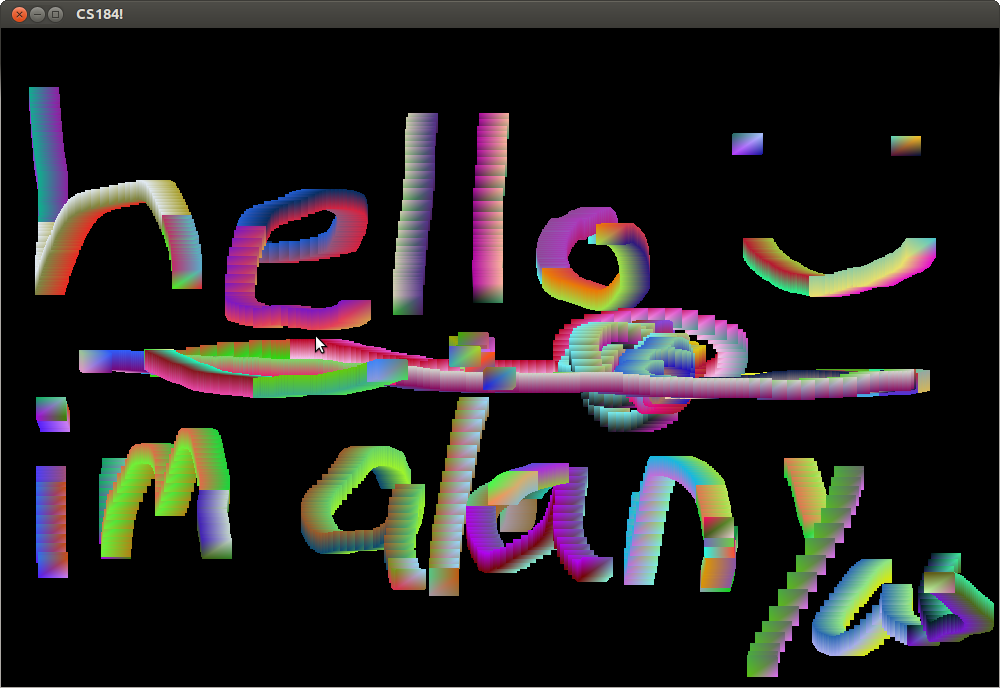

 I modified the example file to render only a square, 0.03f by 0.03f, with random colors at all four colors (colors change every second since the rand function is seeded with the time). The square follows the cursor movement while a mouse button is depressed. Further features added include some 3D perspective, camera motion using arroy keys, manual color changing in response to keyboard input, and ability to place spheres at the camera location.
Back